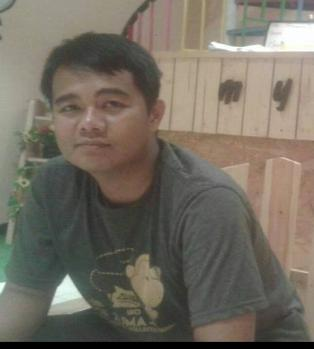

| Biodata | ||
| Nama | : | Imam Marzuki, S.ST., M.T. |
| Tempat, Tanggal Lahir | : | Probolinggo, 29 Desember 1987 |
| Alamat | : | Desa Gunung Geni RT 01 RW 01 Kecamatan Banyuanyar Kabupaten Probolinggo |
| : | imam@upm.ac.id | |
| Hobi | : | Nongkrong di Kafe |
| Motto | : | 4M (Memanfaatkan Apa yang Sudah Ada, Menghindari Beli, Menghindari Instal, dan Menghindari Software Bajakan) |
| Riwayat Pendidikan | ||
| Sekolah Dasar | : | SDN Sebaung 2 Gending Probolinggo 1994 - 1999 |
| Sekolah Menengah Pertama | : | SMPN 1 Gending Probolinggo 1999 - 2002 |
| Sekolah Menengah Atas | : | SMAN 1 Gending Probolinggo 2002 - 2005 |
| Serjana Terapan | : | D4 Teknik Informatika Politeknik Elektronika Negeri Surabaya 2007 - 2012 |
| Magister | : | S2 Bidang Telematika (Telekomunikasi & Informatika) Teknik Elektro ITS Surabaya 2012 - 2014 |
| Keahlian | ||
| Keahlian Umum | : | Pemrograman Web, Sensor dan Internet of Things (IoT) |
| Keahlian Khusus | : | 1. Emulator Komputer dan Jaringan : VirtualBox |
| : | 2. Sistem Operasi : Windows, Linux | |
| : | 3. Bahasa Web : HTML, CSS | |
| : | 4. Bahasa Pemrograman Web : JavaScript, PHP | |
| : | 5. Bahasa Pemrograman Kontrol : C | |
| : | 6. Database : SQL, NOSQL | |
| : | 7. Kode Editor : Notepad, Nano, Gedit | |
| : | 8. Papan IoT : NodeMCU | |
| Segala yang tertulis di halaman ini adalah benar dan dapat dipertanggungjawabkan kebenarannya | ||